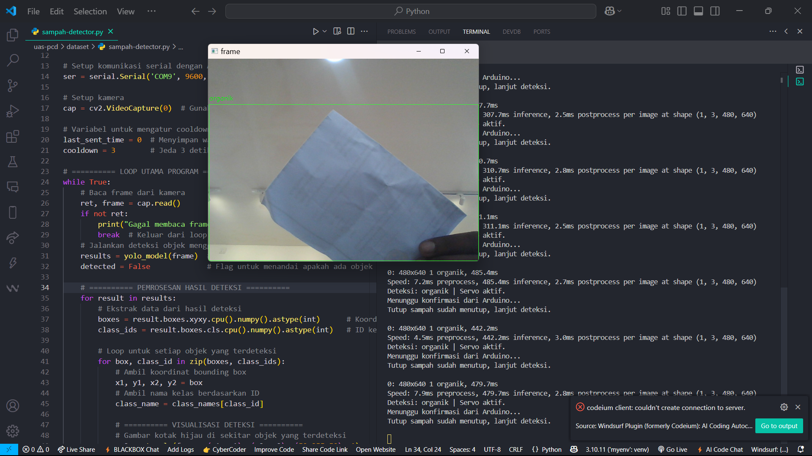

About

Information Systems graduate from Universitas Cenderawasih with a strong interest in web development, IoT and video production — and a track record of leading cross-functional teams through documentation, publication and live-broadcast projects.
- StatusInformation Systems Graduate
- Based inJayapura, Papua, Indonesia
- FocusWeb Dev · Multimedia · Live Broadcast
- AvailabilityOpen to Freelance & Full-time
With a passion that knows no bounds, I aspire to understand the complexity of code and create innovative solutions through programming — while staying rooted in the craft of visual storytelling that got me here.
Experience

Student Exchange — Pertukaran Mahasiswa Merdeka 4
One semester of study and cultural exchange at Universitas Brawijaya, taking on multiple production and coordination roles.

Short Film "Bertukar" — Lead Videographer
Captured scene footage on set for PMM 4 Universitas Brawijaya, working directly under the producer and director.

2nd Place — Papua Provincial English Debate
Competed as second speaker in the provincial SMK-level English debate competition, 2021.

Persami FMIPA 2023 — Director & Editor
Directed, shot and edited the official aftermovie documenting the faculty camp event.

PKKMaBa FMIPA 2023 — Director, Videographer & Editor
Led capture and post-production of the faculty's official freshman orientation aftermovie.

PKKMaBa FMIPA 2024 — Publication & Documentation Coordinator
Led video capture and editing of the official aftermovie as the faculty's primary event record.

Automatic Waste Detection System
Final project for Digital Image Processing — real-time waste-type detection controlling an automated bin.

Multimedia GKI Pniel Kotaraja — Web Developer
Built the official website for the congregation's multimedia ministry, including live-streaming integration.

School Rating Platform — Jayapura
Web developer for a ranking and review platform for high schools, built for a Project Management final assignment.
Skills
Web Development
Production & Design
Education
Bachelor of Information Systems
Universitas Cenderawasih, Jayapura, Indonesia
- GPA: 3.57 / 4.00
- Relevant coursework: Internet Programming, Web Services, Databases, Object-Oriented Programming, Multimedia
SMK Negeri 3 Teknologi dan Rekayasa
Vocational High School
- Completed an internship at PT. Telkom Abepura
- Won 2nd Place in the Papua Provincial English Debate Competition